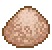

Memory powder
| Memory powder | |
|---|---|
 | |
General Information
| |
Type :
|
Quest item |
Stack size:
|
10 |
Base Cost :
|
|
Source(s)
| |
| Clotho | |

Memory powder is a quest item from the Game of Crone DLC. It is only used in the creation of
Memory tincture. After obtaining the Vampires jaw and talking to Clotho, she gives you three memory powder and the recipe for memory tincture. Additional memory powders can be bought from her for  10 each.
10 each.
Alchemy
| Alchemy workbench (tier II) | |
|---|---|
| Item Produced | Materials Required |
| 1× Memory tincture |
1× Memory powder 1× Silver powder 1× Gold powder |
| ||||||||